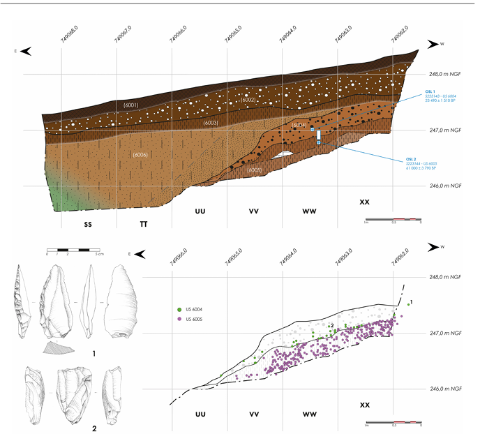
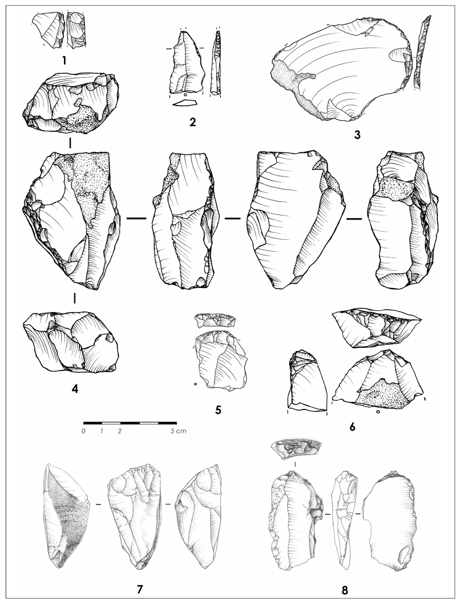
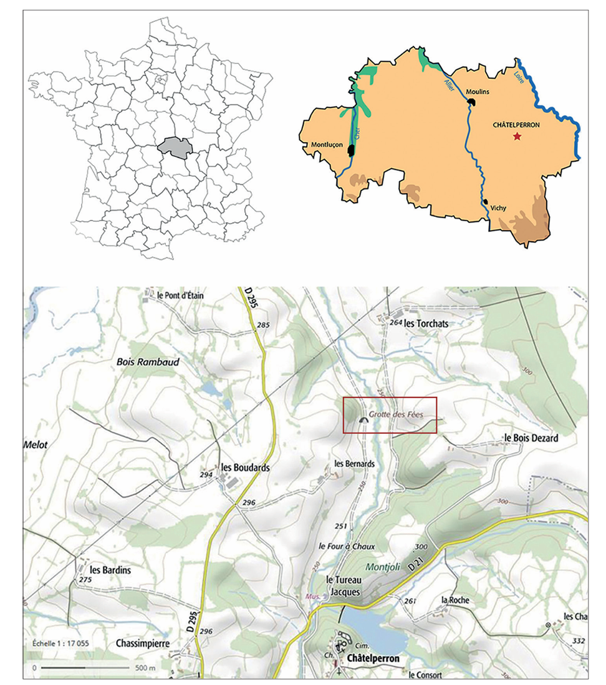

Méthodologie de recherche documentaire
Analyse critique de l’article Wikipédia
Dans le cadre du projet que ce site représente, nous avons dû analyser et faire une étude critique de la manière dont le Châtelperronien est présenté sur Wikipédia (https://fr.wikipedia.org).
Points Forts : Une base de vulgarisation solide
L'article Wikipédia offre une définition correcte du Châtelperronien en tant que culture de transition. Il mentionne bien le site de la Grotte des Fées comme gisement éponyme. La structure est logique, abordant successivement l'industrie lithique, la répartition géographique et les auteurs potentiels (Néandertal).
Limites : Le manque de mise à jour scientifique
L'analyse critique révèle que l'article stagne sur des débats des années 2000. Par exemple :
- Obsolescence : Les résultats des campagnes de fouilles menées par Raphaël Angevin entre 2021 et 2024 ne sont pas encore intégrés.
- Sources secondaires : Wikipédia s'appuie beaucoup sur des synthèses générales et manque de renvois vers les publications récentes dans le Bulletin de la Société préhistorique française.
- La question de l'interstratification : Si le concept est mentionné, l'article ne souligne pas assez fermement que les études récentes (PNAS, 2006) considèrent cette alternance comme une erreur de fouille historique.
Recherche documentaire et sources numériques
Présentation des bases de données et ressources numériques utilisées.
Dans le cadre de ce travail, la recherche documentaire s’est appuyée sur plusieurs types de sources numériques, combinant des ressources de vulgarisation, des bases de données scientifiques et des publications académiques spécialisées.
Les bases de données scientifiques
Les principales recherches ont été menées à partir de plateformes reconnues dans le domaine des sciences humaines et de l’archéologie, notamment Persée et Cairn. Ces bases permettent d’accéder à des articles scientifiques publiés dans des revues spécialisées, comme le Bulletin de la Société préhistorique française. Elles offrent un accès direct à des travaux récents et fiables, indispensables pour dépasser les limites des sources généralistes.
Ces ressources ont notamment permis d’approfondir les débats autour du Châtelperronien, en particulier la question de son attribution à Néandertal et les problématiques liées à la stratigraphie du site.
Les publications scientifiques internationales
Des articles issus de revues internationales, notamment publiés dans Proceedings of the National Academy of Sciences (PNAS), ont également été mobilisés. Ces publications jouent un rôle central dans les débats scientifiques, en particulier sur la question de l’interstratification entre niveaux moustériens et châtelperroniens.
Ces études tendent à remettre en question les interprétations anciennes, en montrant que certains mélanges de couches pourraient être liés à des perturbations postérieures ou à des erreurs de fouilles anciennes.
Les ressources de vulgarisation scientifique
Des ressources de vulgarisation, comme Wikipédia, ont été utilisées en complément, principalement comme point d’entrée dans le sujet. Elles permettent d’obtenir une première définition des concepts (Châtelperronien, industrie lithique, stratigraphie), mais nécessitent une vérification systématique à partir de sources académiques.
Les rapports de fouilles et recherches récentes
Une attention particulière a été portée aux travaux récents, notamment ceux menés par Raphaël Angevin entre 2021 et 2024. Ces nouvelles campagnes de fouilles renouvellent l’interprétation du site et apportent des données essentielles sur la formation des niveaux archéologiques.
Iconographie et cartographie du sujet
Présentation des documents iconographiques et cartographiques utilisés.
L’iconographie et la cartographie occupent une place essentielle dans la compréhension du site de la Grotte des Fées de Châtelperron. Elles permettent de visualiser les structures archéologiques, les objets découverts et l’organisation stratigraphique, complétant ainsi l’analyse textuelle.
Les documents issus du corpus principal
La majorité des images utilisées dans ce travail provient du document PDF de référence étudié (ENTRE LES LIGNES). Ce corpus constitue une base iconographique cohérente, car il rassemble des illustrations directement liées aux recherches scientifiques sur le site.
On y trouve notamment des photographies de vestiges lithiques (pointes, grattoirs), des coupes stratigraphiques ainsi que des schémas d’interprétation. Ces documents permettent de comprendre concrètement les problématiques évoquées, en particulier celles liées à la superposition des couches et à l’attribution culturelle des objets.
La fonction scientifique des images
Les images ne sont pas utilisées uniquement à des fins illustratives, mais comme de véritables supports d’analyse. Les coupes stratigraphiques, par exemple, permettent d’observer la disposition des couches et de mieux comprendre les débats autour de leur possible perturbation.

Figure 4 — Profil stratigraphique et relevé des US (Unités Stratigraphiques) du nouveau locus.
(Source : "Un nouveau locus paléolithique dans le gisement de la « Grotte des Fées » à Châtelperron (Allier)"; R. Angevin, K. Herkert, M. Lejay, M-C. Soulier, H. Würschem)
De même, les représentations d’outils lithiques permettent d’identifier leurs caractéristiques techniques (forme, retouches, tranchant) et d’en déduire leur fonction. Elles participent ainsi à l’interprétation archéologique.

Figure 5 — « La Grotte des Fées ». Industrie lithique du Paléolithique récent retrouvée. Châtelperronien: 1- fragment de pièce à dos (talus ouest, US 1011 – 1012); 2- fragment de pointe de Châtelperron; 3- grattoir sur éclat débordant (talus ouest, US 1006); 4- nucléus à lames châtelperronien (talus ouest, US 1011); 5- grattoir sur éclat (US 1001 – 1004); 6- grattoir sur éclat débordant (US 1012). Aurignacien ?: 7- nucléus prismatique à lamelles (US 6002); 8- grattoir sur lame retouchée (US 6002). – Dessins H. Würschem (1 – 6) et J. Guillou (7 – 8).
(Source : ENTRE LES LIGNES)
Cartographie et contextualisation du site
La cartographie permet de situer le site de Châtelperron dans son environnement géographique et archéologique. Elle contribue à replacer la grotte dans un contexte plus large, notamment celui des occupations humaines en Europe au Paléolithique supérieur.

Figure 6 — Localisation de « La Grotte des Fées » (Châtelperron, Allier). DAO R. Angevin.
(Source : ENTRE LES LIGNES)
Cette mise en contexte est essentielle pour comprendre les interactions entre différentes populations humaines, en particulier entre Néandertal et Homo sapiens.
Choix et adaptation des images
Les images issues du document PDF ont été sélectionnées pour leur pertinence scientifique et leur capacité à illustrer les problématiques abordées. Certaines ont été simplifiées ou adaptées afin de les rendre plus accessibles dans un cadre de médiation numérique, tout en conservant leur valeur informative.